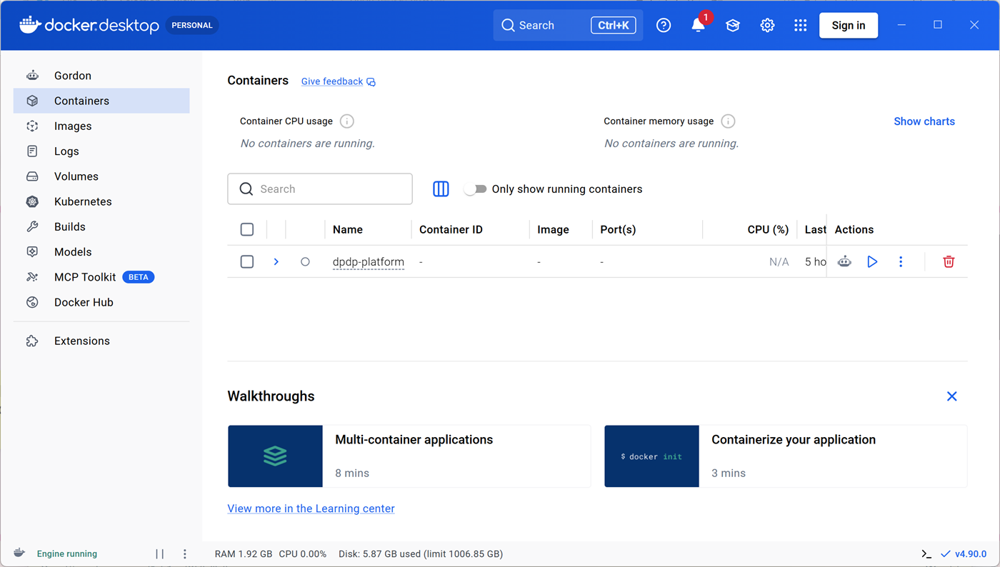
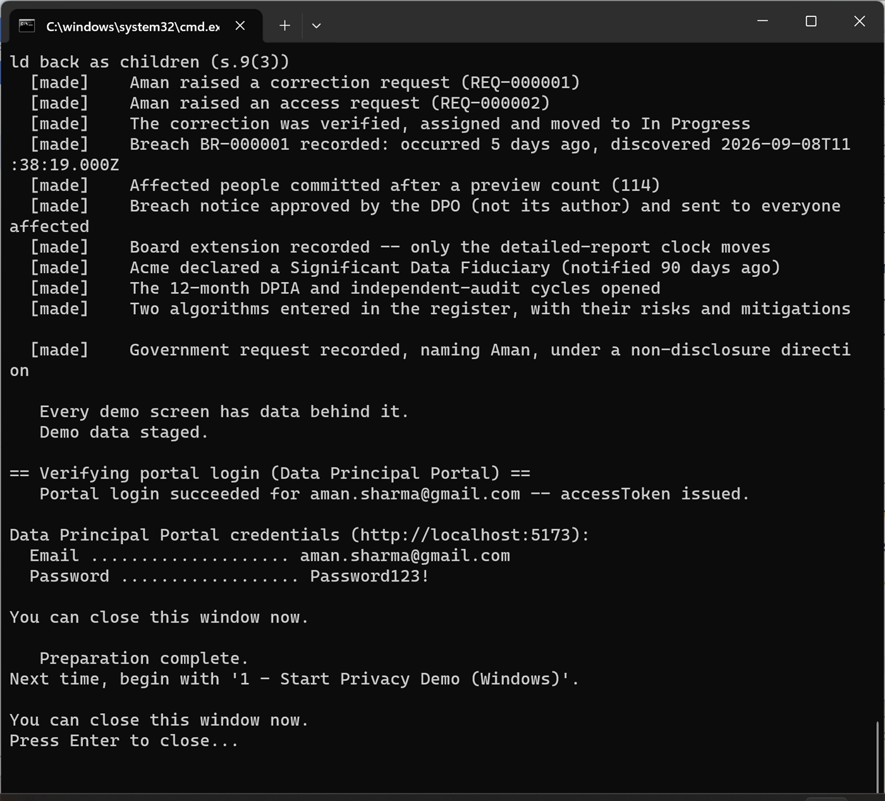
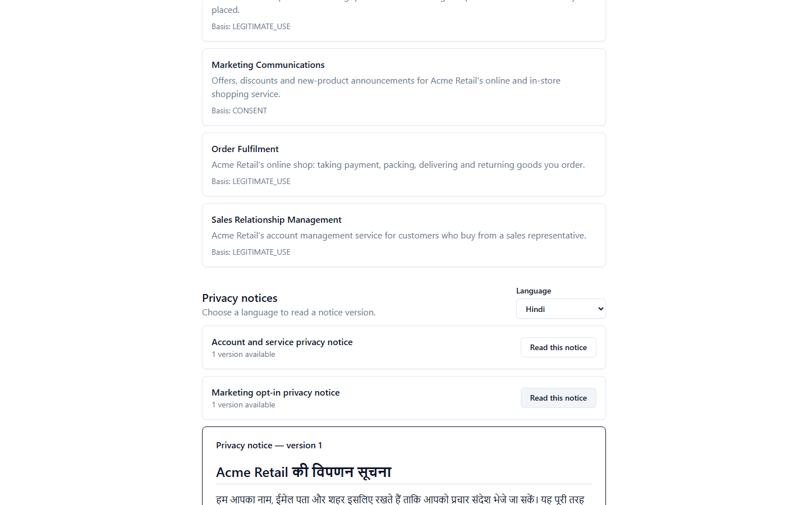
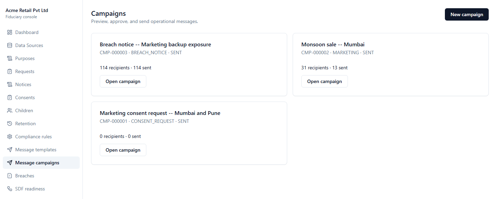

Before you begin: this is demonstration data
Everything in this workspace is fictional and exists only to make the product’s behaviour visible.
Acme Retail Private Limited is a sample organisation. Its 500 source records, 327 people, employees, customers, requests, consents, incidents and Government request are demonstration records. They are not production records and must not be treated as legal advice or as facts about a real person or company.
The environment is deliberately pre-filled so you can inspect complete workflows without entering dozens of forms first. In a client deployment, your administrators configure your organisation, source systems, purposes, lawful bases, notice wording, languages, roles, processors, retention policies, security measures and applicable compliance rules. The product then operates on your authorised data and policies.
The numbered controls in the folder retain names such as Start Privacy Demo because they operate the evaluation environment on this computer. Those labels are not part of the deployed application.
What the platform solves
India’s Digital Personal Data Protection Act gives people rights over personal data and requires organisations to be able to demonstrate how those rights were respected.
Data Principal
The person the personal data is about: for example, a customer.
Data Fiduciary
The organisation that determines why and how that personal data is processed.
Most organisations do not have one customer database. The same person appears in marketing, sales, support and commerce systems under different identifiers and spellings. That makes apparently simple questions—“What do you hold about me?”, “Why?”, “Who received it?”, “Has it been erased?”—operationally difficult.
The platform connects to existing systems without writing back, resolves records into people, surfaces uncertain matches for human review, records processing purposes and sharing, manages notices and consent, tracks statutory workflows, protects children, runs breach clocks and preserves an auditable evidence trail.
Software supports compliance; it does not declare an organisation compliant. Legal interpretation, governance decisions and accountable approvals remain with authorised people.
Words this guide uses
The tour uses the Act’s vocabulary because the product does. Each term is defined once here, in one line, and again in plain terms at the stop where you first meet it on screen. Nothing below assumes you have read the Act.
The people and organisations
Data Principal
The person the data is about — your customer. In this sample, Aman Sharma.
Data Fiduciary
The organisation deciding why and how the data is used — you. In this sample, Acme Retail.
Data Processor
A supplier that handles the data on your instructions, such as a mail-sending service.
Significant Data Fiduciary (SDF)
A larger or higher-risk organisation the Government designates, which then carries extra duties.
Data Protection Officer (DPO)
The named person accountable for privacy, and the contact a customer can escalate to.
The Board
The Data Protection Board of India — the regulator a person can complain to, and which you must notify about a breach.
How the platform organises the work
- Purpose
- A specific reason you use someone’s data — “send marketing email”, not “business use”. Everything in the product hangs off a purpose.
- Lawful basis
- Your justification for a purpose. Under this Act it is either the person’s consent, or a “legitimate use”.
- Legitimate use
- A narrow set of situations where the Act allows processing without consent — such as fulfilling an order the person asked for. These purposes have no consent toggle, because consent is not what permits them.
- Notice
- The plain-language statement telling a person what you collect, why, and how to exercise their rights. It must stand on its own.
- Notice version
- Notices are numbered, not overwritten. Fixing wording creates version 2; version 1 stays exactly as it was.
- Published / frozen
- A published version can never be edited — that is what lets you prove later what a person was actually shown.
- Consent
- A recorded decision by one person, for one purpose, against one exact notice version.
- Withdrawal
- Taking consent back. It is recorded as a new event rather than erasing the old one, so the history stays readable.
- Principal ID
- The platform’s internal identifier for one person. Staff use it to attach a record to the right individual without relying on a name or email, which can be duplicated or change.
- Published notice ID
- The identifier of the exact notice version someone was shown. Recording it is what makes a consent record evidence rather than a checkbox.
How the platform proves what happened
- Audit log
- An append-only list of every recorded action. There is no edit or delete anywhere on that page, by design.
- Content hash
- A short fingerprint calculated from a document’s exact wording. Change one character and the fingerprint changes, so it can be used to show the wording has not been altered.
- Hash chain
- Each audit entry also stores the previous entry’s fingerprint, so the entries are linked like a chain. Removing or altering an old entry breaks every link after it.
- Verify the chain
- The product re-calculates every fingerprint from the stored records and compares. It does not read a saved “this was fine” flag, so tampering cannot simply be marked as valid.
- Evidence pack
- An export of this operational record — for one person, or for the organisation — in a form an auditor or the Board can read.
The Rules this tour cites
The DPDP Rules set out specifics the Act leaves open. The product cites the rule it applied, so a decision can be traced back to a written source rather than to someone’s judgement on the day.
- Rule 3
- What a notice must contain and how it must read: understandable on its own (3(a)), itemised data and purposes, and links to withdraw consent, exercise rights and complain to the Board (3(c)).
- Rule 7(1)
- What you must tell affected people after a personal data breach, and how quickly.
- Rule 8(2)
- The warning a person gets before their data is erased for inactivity — and their chance to stop it by simply logging in.
- Rule 8(3)
- A minimum period certain data and logs must be kept. It sets a floor that an erasure request cannot cut through.
- Rule 13(3)
- The duty on a Significant Data Fiduciary to have a named person review its algorithmic systems.
- Section 14
- A person’s right to nominate someone else to exercise their rights, for example if they die or become incapacitated.
What this computer needs
The platform runs entirely on this computer. Nothing is sent anywhere and no account is created — but a few programs have to be present before the folder can do anything.
If this laptop was supplied with the platform already prepared, everything below is installed and you can go straight to the folder you unzipped. Otherwise ask whoever manages this computer to install the items below; several of them need administrator rights.
| Program | Where it comes from | Why it is needed |
|---|---|---|
| Docker Desktop | docker.com/products/docker-desktop | Runs the database, cache and mail catcher |
| Node.js 20 | nodejs.org | Runs the application itself. Version 20 specifically — 22 and later are not what this platform is built against |
| Python 3 | python.org/downloads/windows | Used by the setup control. Tick Add python.exe to PATH during installation |
| Git for Windows | git-scm.com/download/win | Supplies Git Bash, which the numbered controls run through |
| Visual Studio Build Tools 2022 | visualstudio.microsoft.com/downloads, under “Tools for Visual Studio” | Compiles one security component during setup. Choose the Desktop development with C++ workload |
| A web browser | Google Chrome, Edge or similar | Everything you will look at is a web page served by this computer |
An administrator can install most of these in one go from an elevated PowerShell window:
winget install -e --id Git.Git --source winget
winget install -e --id Python.Python.3.12 --source winget
winget install -e --id Docker.DockerDesktop --source winget
winget install -e --id Microsoft.WSL --source winget
winget install -e --id Microsoft.VisualStudio.2022.BuildTools --source winget `
--override "--quiet --wait --norestart --add Microsoft.VisualStudio.Workload.VCTools --includeRecommended"Node.js 20 is not available through winget, which now carries only newer releases, so install it from the nodejs.org link above. After installing anything, close and reopen any terminal window so the new settings are picked up.
One of the platform’s security components — the argon2 password hasher — has no usable pre-built Windows version and is compiled during setup. Without that workload, setup stops with a gyp ERR! find VS message. It is a one-time installation of roughly 2–4 GB and needs an administrator.
Windows ships placeholder shortcuts named python and python3 that only open the Microsoft Store. Switch them off under Settings → Apps → Advanced app settings → App execution aliases, turning off both Python entries. The setup control checks Python by running it rather than by looking up its name, so it reports this plainly instead of failing later on.
Start Docker Desktop and leave it running. Its whale icon should sit in the system tray, and the window should say Engine running in the bottom-left corner.

The first time Docker Desktop runs it turns on Windows Subsystem for Linux and asks to restart the computer. That is expected.
An internet connection is needed for the one-time setup. After that the evaluation runs offline.
The folder you unzipped
Everything you need is in this one folder. Nothing is installed into Windows itself, and the eight numbered controls are the only files you ever open.
If you have not downloaded it yet:
- Sign in to GitHub and open the repository.
- Click the green Code button, then Download ZIP.
- Open your Downloads folder, right-click the ZIP and choose Extract All….
- Extract it somewhere short and local —
C:\DPDPis a good choice. Not inside OneDrive, and never left unopened inside the ZIP: the controls cannot run from a ZIP preview. - Open the extracted
DPDP-Privacy-Platform-…folder.

| Open this | What it does |
|---|---|
| 0 - Prepare This Computer | One-time setup after downloading: installs, builds and creates the sample workspace. |
| 1 - Start Privacy Demo | Starts the platform and opens it in your browser. |
| 2 - Client Guide | Opens this guide. |
| 3 - Open Database | Opens the sample database in a visual table browser. |
| 4 - Show Demo Proof | Displays live counts read from the running environment. |
| 5 - Demo Status | Shows which parts are running. |
| 6 - Stop Privacy Demo | Stops everything safely and keeps the sample data. |
| 9 - Reset Demo to Fresh State | Deletes and rebuilds the sample data. Do not use this during an evaluation. |
The word “Demo” appears in some of these names because the controls operate this evaluation environment. They are not part of the deployed product.
Prepare this computer once
One control turns the unzipped folder into a working evaluation environment. It is needed once per downloaded copy, and never again.
Double-click 0 - Prepare This Computer and leave the black window open.
If a blue “Windows protected your PC” box appears, choose More info, then Run anyway. Windows shows this for files that came from the internet, once per file.
The control checks this computer first and names anything that is missing, then installs the application packages, builds the three parts of the platform and creates the complete fictional Acme workspace. Allow about 15 minutes on the first run and keep the internet connection on. Nothing needs to be typed while it works.

Setup finishes by putting the same eight numbered buttons on your Desktop, so you need not find this folder again. Either copy works — they are the same controls.
If a required program is missing, or Docker Desktop is not answering, the control stops and says exactly what to install or start. Fix what it names and double-click it again — running it a second time is safe.
Do not repeat button 0 before each visit. Normal use begins with button 1. Button 0 is only for a newly downloaded copy of the folder.
Start the environment and sign in
Setup is done. From here on every visit begins in the same folder and takes about two minutes.
Double-click 1 - Start Privacy Demo. Leave the black status window open until it reports that the platform is ready and opens http://localhost:5173 in your browser.
Accept the Windows Firewall prompt if one appears: the platform runs entirely on this computer, but Windows still asks the first time a local service opens a port.

At the staff sign-in page, use admin@acmeretail.demo and Password123!.

Open a second browser tab at http://localhost:5173/me/login. You will use it later to view the same workflows from an individual’s perspective.
Guided product tour
Follow the seventeen stops in order. “Observe” describes the visible result; “Why it matters” explains the operational value; “Configuration” distinguishes sample choices from fixed product behaviour.
Four systems, one organisation
~90 secondsOpen Data Sources in the left navigation. Select a source to inspect its field mappings.
What you are looking at. A list of the source systems the platform reads from. It connects to systems you already run and never writes back to them, so nothing here can change your live data. This screen is the starting point: everything later in the tour is derived from these four connections.

Each source has its own field names, connection state, last synchronisation and record count. Mapping makes unlike schemas comparable without changing the source.
An organisation cannot govern or answer for personal data it has not located. The inventory and processing register begin with evidence of where data exists.
Acme’s four connectors are samples. Your deployment defines its own supported endpoints, credentials, schedules, canonical mappings, processing purposes and read-only boundaries.
500 source records become 327 people
~2 minutesOpen Dashboard and review the headline figures.
What you are looking at. The same customer usually exists several times over — once in marketing, once in sales, once in support — under different spellings and identifiers. “Resolution” is the platform matching those rows to one human being, so that “what do you hold about me?” has a single answer. 500 rows becoming 327 people is that work, counted.

A request about one person must reach all of that person’s records. Conflicting city values also become a visible accuracy queue instead of remaining hidden across systems.
The figures are from the fixed sample dataset. Matching policy, comparable fields and review thresholds are governance choices; the platform records those choices and never relies on a shared name alone.
Uncertainty goes to a person
~2 minutesOpen Principals, search for Rahul Verma, then open Review Queue.
What you are looking at. The matches the platform was not confident about. Rather than guess and silently merge two people, it stops and asks a member of staff. The queue is deliberate: a wrong merge would show one customer another customer’s data, which is the worst outcome available here.


An aggressive automatic merge could disclose one person’s records to another. The system makes uncertainty reviewable rather than hiding it behind a confidence score.
Your organisation selects the identifiers and thresholds it trusts. Review decisions are role-controlled, recorded and reversible.
Deadlines come from maintained rules
~90 secondsOpen Compliance Rules. Inspect a rule’s citation, effective date, parameters and review state.
What you are looking at. The deadlines the law imposes, written down as rules the platform reads — not numbers hard-coded by a developer. Each rule is versioned and cites its source, so when a deadline is calculated you can always ask “according to what?” and get an answer. When the law changes, the rule is updated rather than the software.

A rule cannot silently weaken a statutory ceiling. Changes retain their source, effective period and approval history.
The included rules support this evaluation. In deployment, authorised compliance owners maintain the applicable citations, jurisdiction, effective dates, schedules and internal targets.
Who else touches the data
~2 minutesOpen Registers and move through its five tabs: Processors & Recipients, Sharing Activities, Cross-Border Transfers, Retention Policies and Security Measures.
What you are looking at. Registers are simply the lists an organisation is expected to be able to produce on request: which suppliers touch the data, what each one receives, and why. Keeping them as live records rather than a spreadsheet someone maintains by hand is what makes them trustworthy at the moment they are asked for.

Each recipient carries its type, country, contract state and status. A processor without a contract on file is visible as exactly that, rather than being an omission nobody can see.
“Who did you give my data to?” is a question the individual may ask and the Board may audit. It can only be answered from a maintained register, and the same register is what tells an organisation which contracts, transfers, retention rules and security measures it has actually committed to.
Acme’s two recipients, its transfer and its retention and security entries are samples. Your organisation maintains its own register content, and decides which roles may change it.
Clear, versioned privacy notices
~2 minutesOpen Notices and choose Open builder on the published marketing notice. Read the published notice at the top of the page, then use Show this notice in to switch it to Hindi and back.
What you are looking at. A privacy notice is the plain-language statement telling a person what you collect and why. Two things make it evidence rather than a web page: it must make sense on its own, and once published it is frozen. Correcting it creates version 2 and leaves version 1 exactly as it was, so you can always show what a particular person was told on a particular day. The content hash beneath it is a fingerprint of the wording — if a single character changed, that value would change too.


Consent evidence is incomplete unless it identifies what the person was told, in the language they were told it in. Corrections create a new version; they do not rewrite history. Notice that the page offers no way to edit the published wording — composing version 2 is folded away below it, and starts from the current text rather than a blank page.
Acme’s wording, purposes and Hindi translation are samples. Your notice owners configure itemised data, purposes, goods or services, rights, contacts and supported languages, with approval before publication.
The individual sees their own information
~2 minutesSwitch to /me/login and sign in as aman.sharma@gmail.com with Password123!. Open Your data, then Privacy information. There, set Language to Hindi and choose Read this notice on the marketing notice.
What you are looking at. The same platform, seen from the customer’s side, at a separate address and a separate login. This is the “Data Principal” view: what Aman can see about himself. Nothing on the staff side is visible here — a useful thing to check for yourself as you go.


Aman can see the data connected to him, its purposes, notices, sharing and contact route. He cannot see internal staff-only notes or another person’s records. The notice he reads is the published version itself, not a copy of it — so the wording he sees and the wording you can later prove he was shown cannot drift apart.
Aman is a fictional sample persona. Production identity proofing, portal branding, contact routes and accessible fields are configured for the client organisation.
What the individual can do without asking anyone
~3 minutesStill signed in as Aman, open Who it’s shared with, then Messages, then Nomination.
What you are looking at. The rights the Act gives a person, built as screens they operate themselves rather than as requests a member of your staff has to action. That distinction matters commercially as much as legally: rights that depend on someone answering an inbox do not scale, and do not evidence well.

Aman is told that CloudMail receives his email address and first name to deliver marketing mail — and explicitly that it does not receive his purchase history or phone number.

Messages are the delivery record, not a copy of one: what the individual reads is the version the organisation approved and sent.

The Act gives the individual rights that must not depend on an employee’s goodwill or availability. Each of these screens serves one directly — and the nomination page is careful to say that saving it grants nobody automatic access to the account; using it later goes through a staffed workflow.
Wording, branding, contact routes and the rights a nominee may exercise are configured for the client organisation.
Now raise a request as Aman, so the next stop follows work you started yourself. Open Requests in his portal and choose Correct my data. Give the field as phone, the current value as +91 98765 43210 and the correct value as +91 98200 08890, then submit. Write down the reference it gives you — something like REQ-000007. You will follow it through the staff console next.
Rights requests with ownership and deadlines
~2 minutesReturn to the staff console and open Requests. Find the reference you were just given and open it, then work it as a case handler would:
- Under Move to, send it to Verification required, then to Open. That pair is what “verified” means here: the organisation confirmed the request genuinely came from Aman before touching his data.
- Open Employees in a second tab, copy any employee’s ID, paste it into Assign employee ID and press Assign.
- Move it to In progress.
- Add a Request note with the box left unticked, then add a second one with Visible to the Data Principal ticked.
- Go back to Aman’s portal, open Requests and open the same reference.
Aman sees the second note and not the first. Then open REQ-000001 in the staff console: a seeded request already carried through the same path, so you can compare a finished case with the one you just started.
What you are looking at. A rights request is a formal ask from a customer — see my data, correct it, erase it, or complain. Each one gets a reference, an owner, a deadline calculated from the rules you saw at stop 4, and a status. “Verified” here means the organisation has satisfied itself the request really came from that person before acting on their data; it is a status the request moves through, not a separate screen.


The workflow connects the public submission to an accountable owner, governing rule, deadline, evidence and a privacy-safe timeline. Because you raised the request yourself, you have now seen both ends of it: what the customer submitted and sees, and what your staff do about it.
Request types, intake channels, assignment rules, verification, escalation, response templates and service targets can be aligned to your operating model.
Consent is specific, evidenced and withdrawable
~2 minutesIn the staff console open Consents.
What you are looking at. A consent record is one person’s decision, for one purpose, against one exact notice version — that combination is what makes it provable. Two labels on this screen are worth naming. The Principal ID is the platform’s internal identifier for a person, used instead of a name or email because those repeat and change. The Published notice ID is the identifier of the precise notice version they were shown; the form demands it when recording a consent captured elsewhere, on paper or in a shop, because without it you would have a tick with nothing behind it. Note too that decisions are Granted, Denied, Withdrawn or Unknown — missing evidence stays Unknown and is never quietly read as consent.


Withdrawal is an event, not an overwritten checkbox. Downstream consequences remain traceable, including suppression and erasure review.
Acme’s marketing purpose and retention dates are examples. Your organisation configures purposes, notice versions, collection channels, campaign approval and retention rules.
Erasure that respects a legal floor
~3 minutesOpen Retention. Read the banner at the top, then the task below it and the state filters above it.
What you are looking at. The queue that carries out erasure. It is not a delete button: the law both requires you to erase data you no longer need and requires you to keep certain records for a minimum period, and those two duties collide. The engine holds every erasure as a task in a visible state and refuses to cross the legal floor, rather than either ignoring the request or quietly failing.

The task carries its trigger (CONSENT WITHDRAWN), its erasure due date, its pre-erasure notice due date, the rule snapshot it was evaluated against (LOG_RETENTION_MINIMUM v1), and a per-system and per-processor completion checklist. It sits in Deferred by retention floor: Rule 8(3) requires the data and logs to be kept for a minimum period, so completion stays blocked until that releases in 2027.
Erasure is not a delete button. The engine holds every task in a state you can see — evaluated, notice sent, deferred, on legal hold, ready, erased, cancelled — and refuses to cross a statutory floor rather than quietly failing. Before a task completes, the person receives the 48-hour pre-erasure notice the rules require; if they sign in during that window, the task is cancelled under Rule 8(2) instead of proceeding. Both steps are run by scheduled jobs, so nothing depends on somebody remembering.
The floor, the notice period and the inactivity period are compliance rules like any other, each versioned and cited. What cannot be configured away is the refusal to erase beneath the floor, or to erase without the notice.
Children are protected independently of consent
~2 minutesOpen Children, then open the marketing campaign’s recipients.
What you are looking at. Children are treated as a separate protection, not as a consent setting. Even where a guardian has agreed, the Act still prohibits tracking and targeted advertising to a child — so the platform blocks the send and records why. This is the clearest example in the tour of a rule the product will not let a campaign author configure away.


CHILD_MARKETING_PROHIBITED, even where guardian consent existed.Guardian consent does not override a prohibition on tracking or targeted advertising to children. The audience engine enforces that distinction and records why delivery was blocked.
Age evidence, guardian verification methods and eligible purposes follow the client’s approved policy; statutory prohibitions remain enforced.
Sending a message is a governed act
~2 minutesOpen Message campaigns, then open CMP-000002, the Monsoon sale.
What you are looking at. Campaigns are where consent stops being paperwork. The audience is compiled at the moment of sending from the consent and children records, and every person left out carries the reason they were left out. That per-recipient record is what turns “we only market to people who agreed” into something you can show someone afterwards.

The marketing campaign compiled 31 recipients and sent 13. The gap is neither an error nor hidden: each suppressed recipient carries the reason it was suppressed, which is what you saw in the children stop.
Consent, age and purpose have to be enforced at the moment of sending, not merely recorded somewhere. Compiling the audience from the consent and children records — and keeping the per-recipient outcome — is what turns “we only market to people who agreed” into something demonstrable afterwards.
Templates, channels, approval steps and audience definitions are yours to configure; the suppression rules follow the consent and children policies rather than the campaign’s author.
Breach response with live regulatory clocks
~3 minutesOpen Breaches, select BR-000001 and review the affected population, notification, obligations and extension.
What you are looking at. A personal data breach starts legal clocks the moment your organisation becomes aware of it — one for telling the Board, one for telling affected people. This screen runs those clocks against the live rules and holds the notification text, its approval and its delivery record, so the response is a documented process rather than a scramble.


The incident’s “became aware” time drives distinct obligations. The notice requires all mandated elements and a second employee’s approval before dispatch.
This incident and Board reference are fictional. Clients configure incident roles, templates, approval paths, escalation contacts and current regulatory rules.
A restricted Government information request
~90 secondsOpen Information Requests and inspect the request naming Aman. Then confirm it is absent from Aman’s portal.
What you are looking at. Sometimes a public authority lawfully requires information and lawfully forbids you from telling the person. The platform handles that without lying: the request is fully recorded for accountability, and suppressed from the customer’s own portal and evidence file — and the suppression is itself audited, so it can be reviewed later.

The organisation must preserve accountability without disclosing a restricted request through the person’s portal, access report or evidence file. Suppression is itself audited.
The authority, legal purpose and references are fictional. Production access is restricted by role and requires the client’s validated process.
The extra duties of a Significant Data Fiduciary
~2 minutesOpen SDF readiness, then follow Open gaps register.
What you are looking at. If the Government designates your organisation “significant”, extra duties follow: a periodic audit, a named review of any algorithm that affects people, and a look at where certain data is stored. This screen turns those duties into work with an owner and a due date. It flags them for a person; it never marks one done by itself.

Each algorithm records what it decides, the processing it performs, whether a risk to rights was identified and what mitigates it — and both are flagged Needs Rule 13(3) review because neither has been reviewed by a named person yet.

An organisation designated significant takes on duties beyond the general ones: a periodic assessment and audit, verified algorithmic due diligence, and localisation review of certain transfers. The platform surfaces these as work with an owner and a due date. It flags them for a human — it never blocks a transfer or marks a review done on its own.
The cycle length comes from the configured compliance rule and its returned due dates, never a hard-coded figure. Whether your organisation is designated significant, and which systems belong in the algorithm register, are decisions your governance owners make.
Evidence that can be independently checked
~2 minutesOpen Audit and scroll to Hash-chain verification. Press Verify hash chain and read the result. Then scroll to Download evidence pack (ZIP); an evidence file for a single person is on that person’s page, under Principals.
What you are looking at. This is the stop that answers “why should anyone believe your records?”. Every action is written to an append-only log, and each entry carries a fingerprint of the entry before it, linking them into a chain. Pressing Verify hash chain re-calculates every one of those fingerprints from the stored records and compares them. It is not reading a saved “all fine” flag — which is the point, because anyone who altered a record could have set that flag too. If a historical entry were removed or edited, the recalculation would not match and the page would name the exact point where the chain breaks.


Each audit event includes the previous event’s fingerprint, so removing or changing a historical event breaks every check after it — and the page names the exact point where it broke. This is the difference between a system that says it kept good records and one that can demonstrate it. Evidence exports then turn that operational work into something an auditor can actually inspect.
Retention, export scope, permitted roles and organisation branding are configurable. Restricted information remains excluded according to policy.
What your organisation can configure
The sample is opinionated enough to explore immediately; a deployment is tailored through governed configuration.
| Area | Examples of client configuration | What remains controlled |
|---|---|---|
| Organisation and access | Legal identity, privacy contacts, branding, staff, roles and permissions | Separation between staff and individual access; auditable privileged actions |
| Data landscape | Source connectors, credentials, schedules, canonical mappings and match thresholds | Read-only source ingestion and human review of ambiguity |
| Processing register | Purposes, lawful bases, data categories, processors, sharing and transfers | Traceability from data to purpose and recipient |
| Communication | Notice wording, languages, templates, channels and approval workflow | Immutable published versions and evidence of what was shown |
| Operations | Request routing, owners, escalation, retention, incident roles and contacts | Deadlines, history, role checks and evidence |
| Rules | Jurisdiction, citation, effective date, parameters, internal targets and review | Version history and refusal of invalid weakening where enforced |
Configuration should be agreed with the client’s legal, privacy, security and operational owners. This guide demonstrates product capability; it is not a substitute for that design process.
Inspect the underlying data
These controls let you verify that the interface is backed by stored records.
Double-click 4 - Show Demo Proof. The window reads current counts from the API and database.

Double-click 3 - Open Database. Useful tables include SourceRecord, DataPrincipal, NoticeVersion, ConsentRecord and AuditEvent.

The database browser is capable of editing. Do not change a value: doing so may invalidate the guided state or the audit chain.
Sample access details
All accounts below are fictional and use Password123!.
| View | Account | What it illustrates |
|---|---|---|
| Staff admin | admin@acmeretail.demo | Full configuration and operational view |
| DPO | dpo@acmeretail.demo | Independent approval |
| Employee | employee@acmeretail.demo | Restricted request handling |
| Compliance | compliance@acmeretail.demo | Compliance operations |
| Auditor | auditor@acmeretail.demo | Read-only oversight |
| Individual | aman.sharma@gmail.com | Main portal journey |
| Individual | raj.patel@gmail.com | Granted consent |
| Individual | neha.rao@example.com | Granted then withdrew consent |
| Individual | sara.khan@example.com | Unaffected by the sample breach |
| Individual | vikram.n@gmail.com | Ambiguous identity kept separate |
Staff: http://localhost:5173/login · Individual portal: http://localhost:5173/me/login · Captured email: http://localhost:8025 · API documentation: http://localhost:4000/api/docs.
Finish safely
Close any database tab, then double-click 6 - Stop Privacy Demo. Wait for “Everything is stopped” and press Enter.

Button 1 restores the same state later. Button 9 is different: it destroys and reconstructs the sample workspace and can take about twelve minutes. Use it only when the environment owner asks you to rebuild the evaluation data.
If something looks wrong
| Symptom | Action |
|---|---|
| Website does not load | Wait 20 seconds, refresh once, then use 5 - Demo Status. |
| A page is blank or spinning | Refresh the page once. |
| Sign-in is refused | Confirm staff use /login, individuals use /me/login, and include the password’s exclamation mark. |
| A service is down | Run button 6, then button 1. |
| “Windows protected your PC” | Choose More info, then Run anyway. This appears only the first time. |
| Database browser does not open | Start the environment with button 1 first. |
| Numbers differ | Record the observed values and ask the environment owner before resetting. |
| A numbered file opens as text, or its window vanishes instantly | Git for Windows is missing. Install it from git-scm.com/download/win and try again. |
| Button 0 says a required program is missing | Ask the computer administrator to install the program named in the window, then run button 0 again. |
| Button 0 says Docker is not answering | Open Docker Desktop, wait until it says Engine running, then run button 0 again. |
| Button 0 says Python is not usable | Install Python 3, then switch off the Microsoft Store aliases — see What this computer needs. |
Setup log shows gyp ERR! find VS | Visual Studio Build Tools with the Desktop development with C++ workload is missing. See What this computer needs. |
| Docker Desktop will not start | It needs WSL2. An administrator should run wsl --install, then restart if prompted. |
Button 9 removes the current sample state. It is intentionally separated from the normal controls.
Appendix · Running it on Linux
This guide is written for Windows, which is what the numbered controls in the folder are. The platform itself runs the same on Linux, through the same scripts.
| On Windows | On Linux |
|---|---|
| Docker Desktop | Docker Engine or Docker Desktop |
| Node.js 20 from nodejs.org | Node.js 20 through nvm |
| Python 3, Git for Windows, C++ Build Tools | The PostgreSQL client tools (psql) and xdg-utils. No compiler is needed |
| Double-click 1 - Start Privacy Demo | Run bash "demo-control/linux/1 - Start Privacy Demo.sh" |
The numbered .cmd files in the folder are Windows launchers; every one of them simply runs a script in demo-control/, and the matching Linux entry points sit in demo-control/linux/. Running demo-control/install-launchers.sh once puts the same eight buttons on the Desktop and in the applications menu, marked trusted so a double-click runs them. If a launcher still opens as text, right-click it once and choose Allow Launching.
Everything else in this guide — every screen, every figure, every observation — is identical.